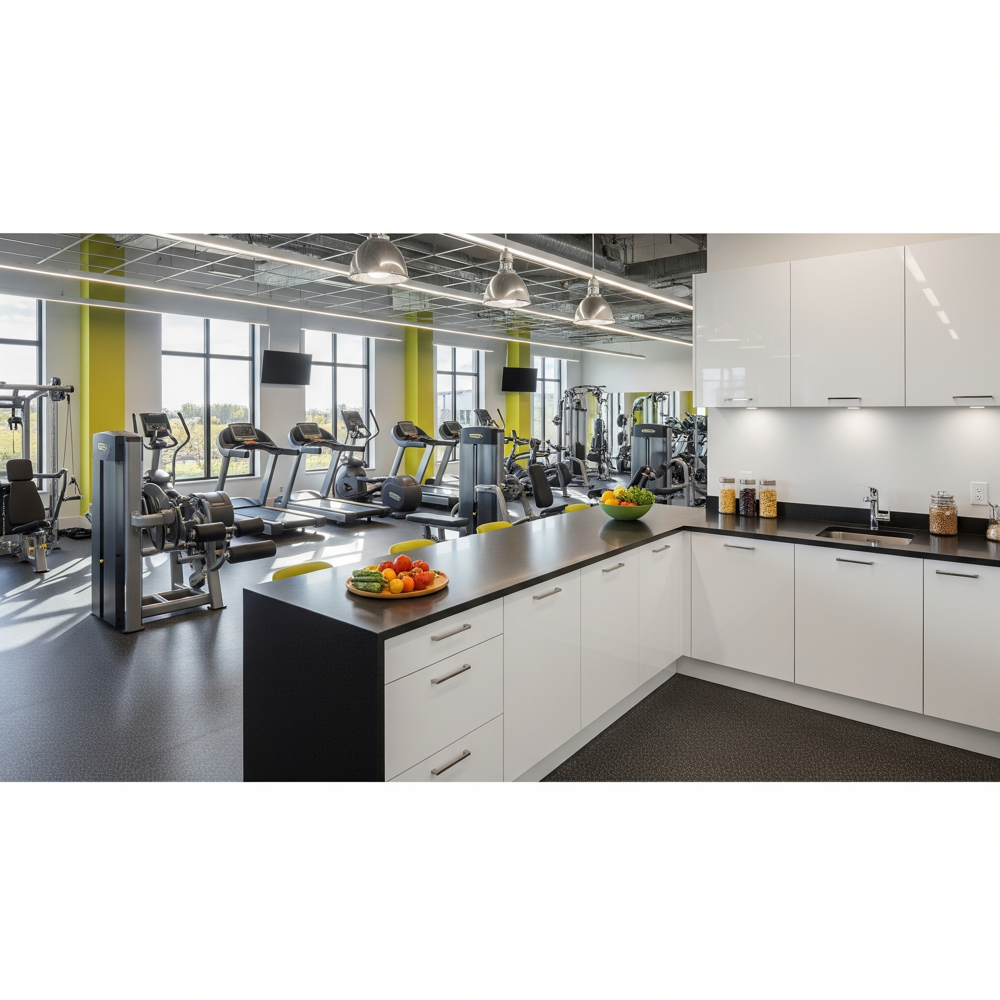

Take Control of Your Breathing, Reclaim Your Life.
Our comprehensive pulmonary rehabilitation program is designed to help you manage your chronic lung condition, improve your strength, and enhance your quality of life.
“Restoring Breath. Renewing Life.”
Explore Our ProgramUnderstanding Prana: The Vital Life Force

In the simplest terms, prana (a Sanskrit word) is the universal life force or vital energy that animates all of existence. While it is most closely associated with the breath, prana is more than just the air we inhale and exhale. Think of it as the fundamental energy that flows through and sustains all living things, from the smallest plant to the most complex human being.
A helpful way to understand prana is to think of it like electricity. We can't see the electrical current itself, but we see its effects in a lit-up lightbulb or a running appliance. Similarly, we can't see prana, but we experience its presence through our vitality, health, and overall sense of well-being. When our prana is strong and flowing freely, we feel energetic, vibrant, and alive. When it is weak or blocked, we may feel sluggish, unwell, or emotionally drained.
Is This Program For You?
Our program is designed for individuals whose lives are impacted by chronic lung disease. If you experience shortness of breath (dyspnea) that limits your ability to perform daily activities, have noticed a decline in your physical endurance, or feel that your condition is controlling your life, you are a prime candidate for our services.
Patients with Obstructive Diseases
This is our largest patient group, primarily those with a diagnosis of COPD (including emphysema and chronic bronchitis). We also serve patients with persistent asthma, bronchiectasis, and cystic fibrosis who are looking to improve exercise tolerance and manage symptoms more effectively.
Patients with Restrictive & Neuromuscular Diseases
Our program benefits patients with conditions that restrict lung expansion, such as interstitial fibrosis and sarcoidosis, as well as those with neuromuscular diseases like muscular dystrophy and myasthenia gravis, where respiratory muscle strength is compromised.
Pre- and Post-Surgical Patients
Rehabilitation is crucial for optimizing outcomes for lung volume reduction, lung transplant, or other thoracic surgeries. We work to build strength and endurance before surgery ("pre-hab") and help restore function and confidence after your procedure.
What You'll Be Doing
Our Program Philosophy: Breaking the Cycle
We understand the downward spiral: respiratory impairment leads to dyspnea during exertion, which causes a natural avoidance of activity. This leads to physical deconditioning, which in turn causes dyspnea with even milder exertion. Our program is built to break this cycle. By combining physical reconditioning, nutritional science, and mental wellness, we create a powerful upward momentum towards better health and restored confidence.
-
Aerobic & Strength Conditioning: We build your endurance and reverse muscle wasting (sarcopenia) with supervised use of treadmills, bikes, and resistance training. Toned muscles use oxygen more efficiently, lowering your work of breathing.
-
Inspiratory Muscle Training: We use devices like the P-Flex trainer to specifically strengthen your breathing muscles, making each breath more effective and less fatiguing.
-
Mind-Body Techniques: According to yogic philosophy, we receive prana from several sources, including the sun, fresh food, and clean water. However, the most direct way we absorb and interact with prana is through our breath. This is why breathing exercises, known as pranayama, are a cornerstone of our practice. By consciously controlling your breath through techniques like pursed-lip and diaphragmatic breathing, we can influence the flow of prana, leading to a calmer mind, reduced panic from dyspnea, and a more balanced physical state.
-
Personalized Nutrition Prep: This is a comprehensive solution that bridges the gap between knowing what to eat and actually eating it. It moves beyond generic diets by creating a completely customized weekly meal plan based on your unique health objectives, dietary restrictions, food preferences, and daily schedule.


Who You'll Work With: Our Collaborative Care Team
Your success is the result of a coordinated effort from a team of dedicated specialists. We hold weekly case conferences to discuss your progress, ensuring your care plan is seamless, integrated, and always focused on you.

Dr. Eva Chen
Medical Director

John Miller, RRT
Breathing Expert

Maria Garcia, CEP
Fitness Specialist

Sam Jones, RD
Nutrition Guide

Aisha Khan, LCSW
Psychosocial Support
360° Support for Your Well-being
Empowerment Through Education
Knowledge is power. We empower you with a deep understanding of your condition, moving beyond simple instructions to in-depth analysis of why and how our strategies work.
- Understanding Your Lungs: This part of our program focuses on moving beyond just the name of your diagnosis to a true understanding of how it affects your body. We use simple language and clear diagrams to explain what is happening inside your lungs and why it causes symptoms like shortness of breath or fatigue. By understanding the "why" behind your condition, you can then understand the rationale for each treatment, seeing exactly how a specific exercise or medication is designed to help you manage your symptoms and improve your lung function. This knowledge empowers you to become a more confident and active partner in your own healthcare.
- Medication Mastery: Mastering your medications is key. We'll use practice devices to help you perfect your inhaler technique for bronchodilators and steroids. We'll also explain clearly why each medication is important and the right time to take it. To make sure you leave feeling completely confident, we use a simple 'teach-back' method where you show us what you've learned.
- Early Intervention: We work closely with you to create a personalized action plan for when your symptoms worsen. You will learn to identify your unique early warning signs of a flare-up, such as increased coughing, changes in mucus, or needing your rescue inhaler more often. Acting on this plan quickly by adjusting medications as prescribed and contacting your doctor can often prevent a serious decline and help you avoid a trip to the emergency room or a hospital stay.
- Energy Conservation: This involves a practical, one-on-one review of your daily activities to find ways to make them less tiring. We teach you simple but effective techniques like breaking down large chores into smaller steps, alternating activity with rest, and arranging your home to minimize wasted motion. The goal is to empower you with strategies that help you save your energy for the activities you enjoy most, allowing you to live a fuller life.
Psycho-social & Nutritional Science
A healthy mind and body are connected. We support both with evidence-based strategies.
- Mental Wellness: We offer guided meditation and breath work to manage the stress and anxiety of chronic disease. These practices, combined with one-on-one counseling and professionally facilitated peer support groups, help you build resilience and a strong support network.
- Targeted Nutritional Science: The caloric cost of breathing for a COPD patient can be ten times higher than normal. Our dietitian addresses this by designing a high-fat, low-carbohydrate, moderate-protein diet to reduce CO2 production (lowering your Respiratory Quotient) and ease the work of breathing. We provide shopping lists, recipes, and meal prep guidance. For convenience, these scientifically-designed meals can also be prepared in our on-site kitchen.

A Space Designed for Healing
Our ground-floor center is bright, accessible, and designed to be a welcoming, non-clinical environment. It features an open-plan gym to foster camaraderie, private consultation rooms for confidential discussions, a well-equipped kitchen for nutritional education, and a comfortable group education area that feels more like a living room than a classroom.
Seamless Transition to Home Life
Our goal is your long-term independence. Your discharge plan includes a thorough home assessment to ensure electrical safety and accessibility. We teach you and your family to manage and troubleshoot home equipment, from oxygen concentrators to ventilators, and provide clear emergency procedures. We ensure you qualify for home oxygen (PaO2 ≤ 55 torr or SaO2 ≤ 88%) and help you create a sustainable home exercise plan.

How We Measure Your Success: An Evidence-Based Approach
We begin with a comprehensive baseline evaluation, including spirometry, lung volumes, diffusion capacity, ABG, EKG, and a formal exercise test. This data-driven approach allows us to tailor your program and demonstrate tangible improvements in your health and quality of life using internationally recognized, evidence-based tests.
Changes in Exercise Tolerance
An increased distance on the 6-Minute Walk Test (6MWT) directly correlates with improved cardiovascular health and endurance for everyday activities.
Changes in Symptoms
A lower score on the Borg Dyspnea Scale indicates you feel more comfortable and in control during exertion. We also track cough frequency and weight changes.
Changes in Overall Health
We track improvements in Activities of Daily Living, frequency of hospitalizations and ER visits, and use validated Quality of Life surveys like the Chronic Respiratory Questionnaire (CRQ) and St. George's Respiratory Questionnaire (SGRQ) to measure the real-world impact of the program.